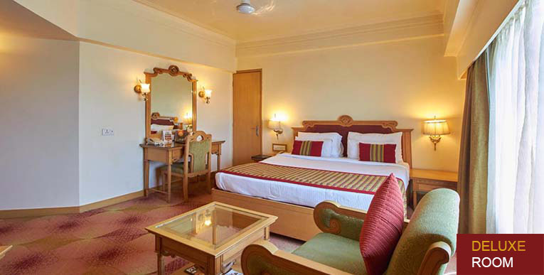
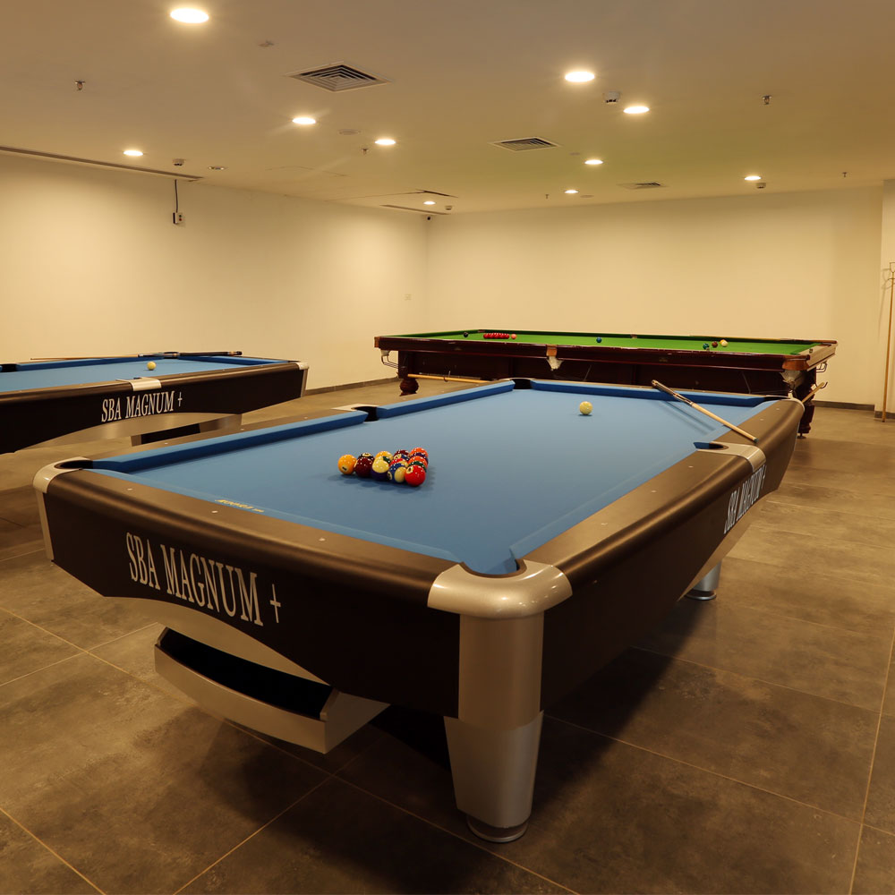

Founded in 1971 in Bangalore, Lotus Hotel is the quintessential village resort, showcasing the best of what Bangalore has to offer to our guests. All the elements of a simple life, yet the distinct touch of thoughtful luxury, are all packaged into an affordable holiday here. Featuring 55 rooms with our 31 room new block of large rooms with a “Zen” look, with all the modern five star comforts, 18 ‘Deluxe’ rooms with renovated interiors, 2x one bedroom suites, 4x 2 bedroom suites, all these large and spacious dwellings offer you modern comforts, in a rustic local surrounding. We also cater to your business and conference needs with two perfectly sized Conference Halls. We can ensure you breakaway corporate off-site sessions, receptions and launch events in ever green Bangalore, will meet their objectives handsomely. Our large green lawns will cater to all social events in the greenest surroundings. Lose and find yourself again at Lotus Hotel – Stay Your Way! Please do “Like” and follow us on Facebook for regular updates, promotions, features, all year round! We are proud to be a TripAdvisor “Hall of Fame” 2017 recipient, a recognition of 5 consecutive years of winning the TripAdvisor “Certificate of Excellence” from 2015 to 2017. It is you, our dear guests, that have given us this honour that we strive hard to uphold daily and to win your recognition for years to come. BOOK DIRECT with us from our website and get the best rates always. Again, Only Online, Only at www.lotus.in.* **conditions apply
| Standard Delux Room |  |
| A view of the pool | |
| Sports Room |  |
The earliest records of a place named "Bengaluru" are found in a ninth-century temple in an area now known as "Old Bangalore". Legend has it that when the feudal lord Kempe Gowda was once hunting rabbits in the area, a rabbit appeared and attacked his dog. This made a great impression on Gowda and he named the place gandu bhoomi (the place of heroes). In 1537, with the assistance of the local king, he constructed three districts protected by a walled fort on the site. During the next three centuries, Bangalore existed very much in the shadow of the neighbouring city, Mysore, and control of the town changed hands many times. The year 1831 marked a major turning point for the city.
Founded in 1971 in Bangalore, Lotus Hotel is the quintessential village resort, showcasing the best of what Bangalore has to offer to our guests. All the elements of a simple life, yet the distinct touch of thoughtful luxury, are all packaged into an affordable holiday here. Featuring 55 rooms with our 31 room new block of large rooms with a “Zen” look, with all the modern five star comforts, 18 ‘Deluxe’ rooms with renovated interiors, 2x one bedroom suites, 4x 2 bedroom suites, all these large and spacious dwellings offer you modern comforts, in a rustic local surrounding. We also cater to your business and conference needs with two perfectly sized Conference Halls. We can ensure you breakaway corporate off-site sessions, receptions and launch events in ever green Bangalore, will meet their objectives handsomely. Our large green lawns will cater to all social events in the greenest surroundings. Lose and find yourself again at Lotus Hotel – Stay Your Way! Please do “Like” and follow us on Facebook for regular updates, promotions, features, all year round! We are proud to be a TripAdvisor “Hall of Fame” 2017 recipient, a recognition of 5 consecutive years of winning the TripAdvisor “Certificate of Excellence” from 2015 to 2017. It is you, our dear guests, that have given us this honour that we strive hard to uphold daily and to win your recognition for years to come. BOOK DIRECT with us from our website and get the best rates always. Again, Only Online, Only at www.lotus.in.* **conditions apply